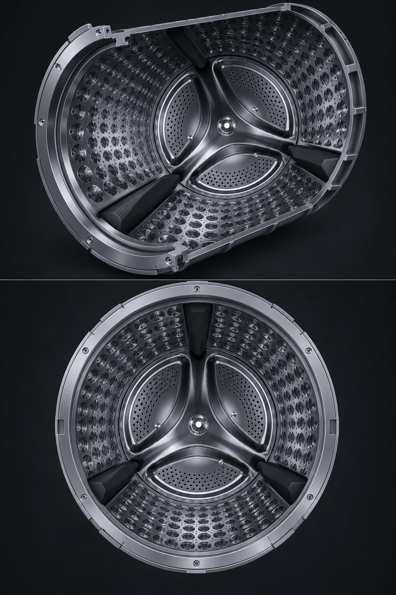
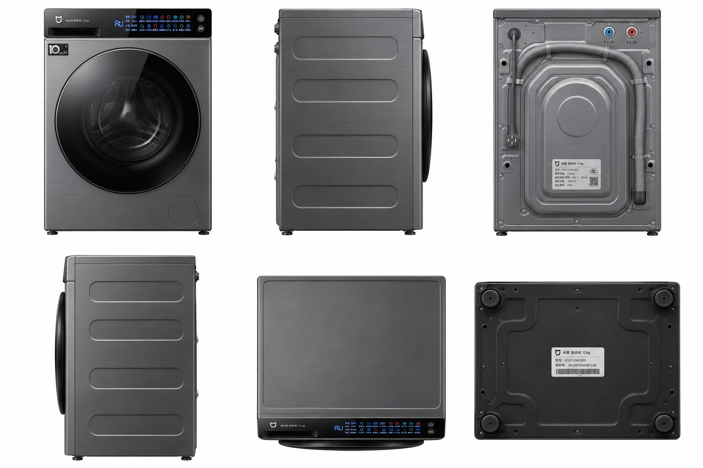
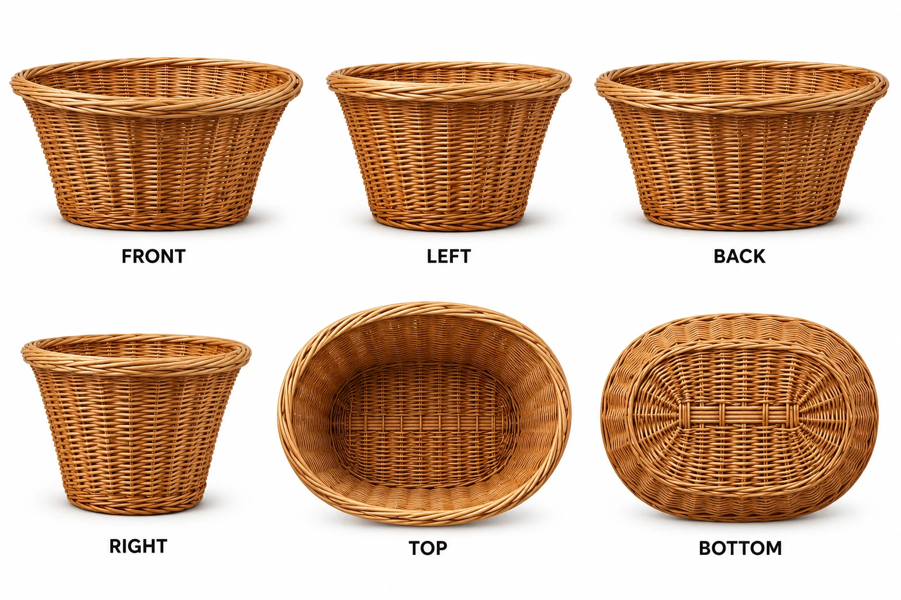
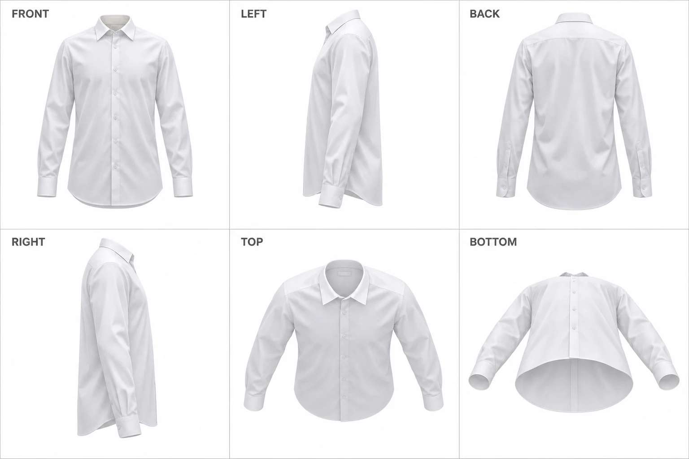
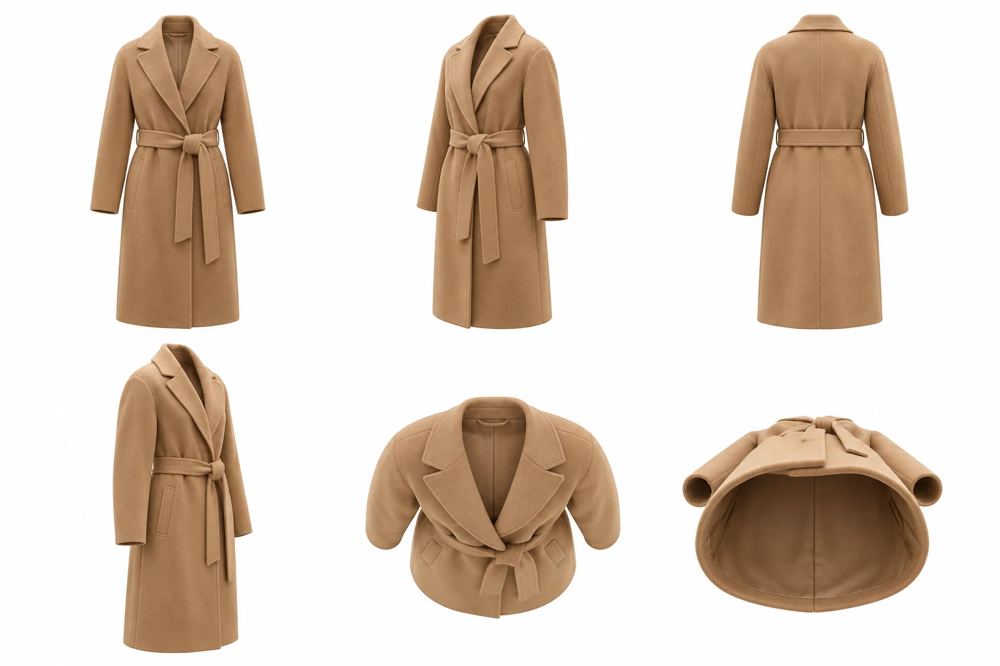
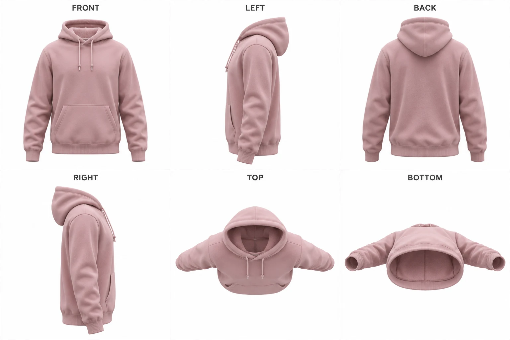
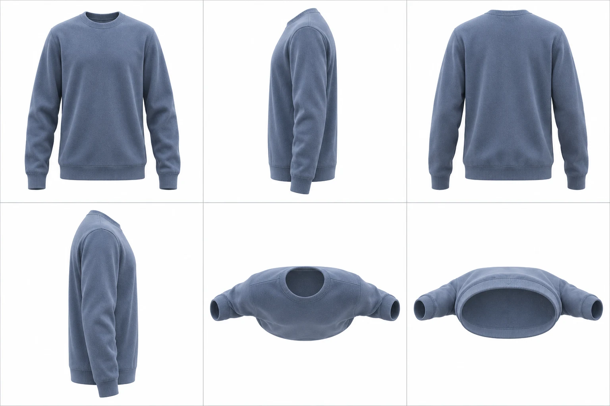

洗衣机
剧本与分镜
剧本
下载原文# 《洗衣机》广告剧本 依据原片参考帧改编，原声与旁白待听校。产品信息沿用可见字幕。 **内景 · 黑色产品棚** 光扫过机身标识、圆形舱门与金属孔壁，石墨灰洗烘机显出全貌。操作者端来装着衣物的藤篮，将衣物送入内筒，合上舱门。画面突出 12KG 超大容量，触控面板亮起，展示洗烘程序。 **内景 · 滚筒及织物微观空间** 水流卷过白衬衫。镜头潜入织物，冷色纤维间的污渍在气泡中逐渐分解。随后以剖视画面表现内筒与减震结构。 **内景 · 热交换系统及产品棚** 透明机壳上方，蓝色与金色气流穿过换热组件，暖风进入滚筒。水珠从织物表面消退，驼色外套在内筒中舒展。舱门合回产品镜头，整机置于背景中央收尾。
脚本
下载原文# 《洗衣机》分镜脚本 时间为采样帧定位段，具体切点和原声待逐镜复核。 | 时间（约） | 画面和表现方式 | 可见字幕重点 | |---|---|---| | 00:00–00:14 | 标识、舱门边缘、内筒壁特写，切整机和滚筒内部 | 产品标识 | | 00:14–00:24 | 手拎藤篮入画，送入衣物，舱门关闭 | 12KG超大容量 | | 00:24–00:28 | 触控面板特写，显示程序和剩余时间 | 内置30种洗烘程序 | | 00:28–00:42 | 水流包裹衬衫，切冷色织物微观，回到多种衣物在筒内展开 | 升级蓝氧净技术、去渍更强力、1.2超高洁净比 | | 00:42–00:48 | 机身剖视展示减震结构，切水面细节 | 6维减震 更平稳 | | 00:48–00:58 | 透明机壳展示冷热气流经过换热组件并进入滚筒 | 高效换热系统 省电又强劲 | | 00:58–01:10 | 暖色气流围绕衣物，微距展示织物与水珠，切驼色外套 | 智能低温柔烘 呵护衣物、自然抖散 清新香薰护理 | | 01:10–片尾 | 舱门近景切整机正面，产品在暗色棚景中定格 | 以画面为主 |
制作资产
场景资产 · 2 项

道具资产 · 7 项





